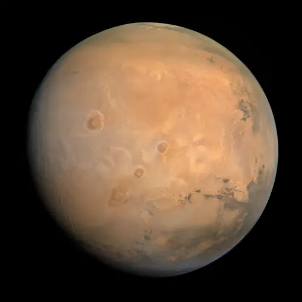

Marte - Planeta Vermelho

Introdução e História
Marte é o quarto planeta a partir do Sol e é conhecido como o “Planeta Vermelho” devido à forte presença de óxidos de ferro em sua superfície, que lhe conferem uma coloração avermelhada característica. Observado desde a antiguidade, Marte já foi tema de especulações e observações com telescópios rudimentares muito antes da era espacial. Com o avanço da tecnologia, sondas e rovers enviadas pela NASA, ESA e outras agências revelaram detalhes de sua geologia, atmosfera e história climática, tornando Marte um dos objetos mais estudados do Sistema Solar.
Características Físicas: Diâmetro, Massa e Órbita
Marte tem um diâmetro de cerca de 6.780 km — aproximadamente metade do tamanho da Terra — e possui uma massa de cerca de 6,42 × 1023 kg, cerca de 10% da massa da Terra.
O planeta orbita o Sol a uma distância média de cerca de 228 milhões de km e completa um ciclo em cerca de 687 dias terrestres, definindo seu ano.
Um dia marciano (chamado “sol”) dura aproximadamente 24 horas e 37 minutos, muito semelhante ao dia terrestre.
Estrutura Interna e Geologia
Marte é um planeta rochoso com crosta sólida e um interior composto por um núcleo rico em ferro, níquel e enxofre, envolto por um manto e uma crosta de silicatos.
Superfícies marcianas mostram uma história geológica complexa: vastos sistemas de cânions como o Valles Marineris, planícies desérticas, vulcões gigantes como o Monte Olympus (o maior do Sistema Solar) e inúmeras crateras de impacto.
Missões Espaciais
Marte tem sido alvo de exploração intensa por décadas:
- Missões orbitais como Mars Reconnaissance Orbiter estudam a superfície e a atmosfera com alta resolução.
- Rovers como Curiosity e Perseverance investigam a geologia e procuram sinais de antigos ambientes aquáticos.
- Missões futuras planejam retorno de amostras e preparação para possíveis missões humanas.
Atmosfera e Clima
A atmosfera de Marte é muito fina e composta principalmente de dióxido de carbono (mais de 95%), com pequenas porcentagens de nitrogênio e argônio.
Devido à baixa densidade atmosférica (cerca de 0,6% da atmosfera terrestre), a pressão superficial é extremamente baixa, e a atmosfera não é capaz de reter calor de forma eficiente.
Temperaturas variam amplamente — podem chegar a cerca de 20 °C durante o dia próximo ao equador, e cair abaixo de -120 °C à noite ou em regiões polares.
Potencial de Habitabilidade
- 💧 Água Líquida: Embora a água líquida não seja estável na superfície atual, há evidências de que Marte teve água abundante no passado e ainda tem gelo e possivelmente água subterrânea.
- ⚡ Fonte de Energia: A energia térmica interna e os processos químicos passados podem ter criado ambientes potenciais para reações complexas no passado.
- 🧬 Ingredientes Químicos: Compostos orgânicos simples foram detectados em rochas marcianas, sugerindo a presença de blocos básicos de química relacionada à vida.
Embora hoje o ambiente seja inóspito para vida como conhecemos, os indícios de água antiga e química rica tornam Marte um foco importante em estudos astrobiológicos.
Curiosidades
Marte é chamado de Planeta Vermelho devido ao alto teor de óxido de ferro em seu solo, que lhe dá a coloração característica.
Marte possui dois pequenos satélites naturais — Fobos e Deimos — que são capturados pela gravidade do planeta e orbitam muito próximos dele.
Tempestades de poeira podem englobar o planeta inteiro por meses, dificultando a observação e explorando tecnologias para futuras missões humanas.
Origem do Nome
Marte recebeu seu nome da mitologia romana, em homenagem ao deus da guerra. Na tradição romana, Marte era filho de Júpiter e Juno, protetor dos exércitos. Sua cor avermelhada foi associada ao sangue derramado em batalhas, reforçando a ligação com a guerra. Os gregos o relacionavam a Ares, deus da guerra, com características semelhantes. O nome reflete tanto a coloração do planeta quanto a influência cultural das antigas civilizações na observação dos céus, mostrando a conexão entre astronomia e mitologia.
Referências
- WIKIPEDIA. Marte (planeta). Disponível em: https://pt.wikipedia.org/wiki/Marte_(planeta). Acesso em: 24 dez. 2025.
- NASA. Mars Facts. Disponível em: https://science.nasa.gov/mars/facts/. Acesso em: 24 dez. 2025.
- NASA. Humans to Mars. Disponível em: https://www.nasa.gov/humans-in-space/humans-to-mars/. Acesso em: 24 dez. 2025.